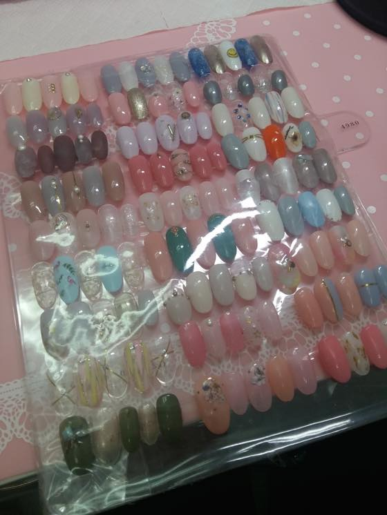
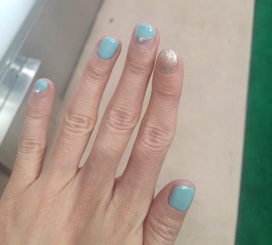
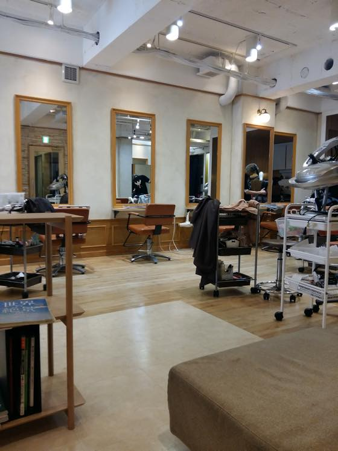

11월 디자인페스타 참가겸 3박4일 도쿄 댕겨왔습니다 :)
가기전에 이번에는 도쿄에서 꼭 네일샵을 방문해보리다!! 라고 마음먹고 미리 홋또페퍼서 예약해놨습니다
https://beauty.hotpepper.jp/
행사마치고 신주쿠에 있는 네일샵으로 거거~

약 5천엔이 좀 안되는 4980엔 코스인가 였는데
위 네일 아트 중 고르면 됩니다. 색상은 변경가능 / 디자인은 변경 불가
중앙 위에서 두번째 디자인 고르고 꽃스티커(?)는 너무 촌스럽길래 그 디자인 빼주면 안되냐고 물어봤더니
그럼 골드나 파츠 붙이는 디자인으로 대체할까요? 라고 물어봐서 그렇게 해 달라고 했습니다
한국서 네일샵 가면 손, 손톱이 너무 작다 / 케어하기 힘든 손이다 / 손톱 너무 바짝 자르지 마라 기타등등 소리를 들었는데
아무런 코멘트 없이 네일 해 주셔서 좀 색달랐어요 ㅋㅋ
정말 아무런 멘트가 없으심
뒤에 달아놓은 티비에서 프리티우먼 하길래 줄리아로버츠가 유창하게 일본어를 하는(더빙)걸 구경하고 차 홀짝이면서 시간을 보냈습니다.
마치고 어느정도 후에 지워야 하냐고 물었더니 3-4주까지도 멀쩡하다고 그러더군욤
하지만 난 손톱 못기르는 사람;; 아마 금방 지울거 같아;;;

깔끔해진 손을 보니 기분이 좋습니다 홍홍
약 열흘이 지난 지금도 깨진곳 하나없이 늠 잘 붙어있어서
살짝 망설이고 있습니다
손톱 길렀다 자르고 싶다 / 하지만 이렇게 멀쩡한데 아깝다 - 사이에서 하루에도 몇번씩 왔다갔다 ^^;;;
이번주에 지울거 같아요 ㅋㅋㅋㅋㅋ 긴손톱 왜이리 견디기 힘들어 하는지 ^^;;;;
그리고 목요일 저녁 사람꼴 하고 비행기타겠다고 컷트했다가 너무 충격적으로 망해서;;
세상에 양 사이드 머리가 고장난 나사 튀어나온것처럼 뻗쳐서 ㅡㅡ;;;; 도저히 수습이 안되는 지경이었어요;;
나름 자주 가는 헤어샵에 디자이너 분이었고
내머리 펌, 커트 많이 해주신 분이었는데 이게 무슨일이야 싶을정도로;;
이분도 컷트해놓고 뜨악했던지 일주일 내에 펌 하러 오시라고 오면 커트비 빼드린다고 했는데
어우 담날 자고 일어나니 이건정말 ㅋㅋㅋㅋ
돈쓰고 시간써서 정성스럽게 못생겨짐 ㅡㅡ;;;;
도저히 이꼴로 못다닌다 싶어서
인천공항가는 버스안에서 신주쿠에 있는 헤어샵 예약했습니다 ㅡㅡ;;;;;
컷트+파마+트리트먼트 에 4600엔 왜이렇게 싸지;;
이건 밑져야본전이란 생각에 덥석 예약
일욜날 아침에 우선 신주쿠 미용실로 출동했습니다

미용실가서 사정설명하고
젭알 양쪽 삐져나온 머리좀 어떻게 해줘요 ㅜㅜ 라고 징징거리니까
살펴본후 가볍게 다듬고 볼륨만 살린 펌을 하기로 결정
역시나(?) 마법의 문장 '머리결도 덜 상하고 관리도 훨씬 쉬운 시술'이 있는데 어떻습니까? 가격은 6천엔 입니다 라고 권하길래
그걸로 오케이 했습니다. 아니 왤케 저렴하지? 세상참;; 도쿄가 싸게느껴지는 날이 올줄이야 ㅡㅡ;;;
예약할 때 표기된것 처럼 정확히 한시간 반 만에 끝났고(역시 일본;;;) 펌도 완전 맘에 들게 나와서 뿌듯합니다.
디테일의 화신(....)들 이라 제 머리 보더니 뒷쪽을 왜이리 남자처럼 직선으로 잘라놨냐고 하더군요
좀더 둥글게 굴려주면 좋다면서// 전반적으로 참으로 직선직선 사나이 스럽게 커트를 하셨네요 - 라고 평가를 했습니다 ㅜㅜ 제...제길 ㅋㅋㅋ
첨에 여기서 몇년이나 살았냐고 물어보길래
살긴 10년전(이말 꺼내면서 스스로 깜놀;; 글케 오래전 일이란 말인가;; 난 늙었졍 ㅜㅜ) - 에 촘 살았었고 지금은 여행온거라고 낼 돌아간다니까
그럼 예약은 어떻게 했냐고 물어보길래 내 머리가 이꼴이라 인천공항가는 버스안에서 했어요 매우 급하게!! 라고 대답하니
한국에서도 예약이 가능하단걸 매우 놀라워 하더군요 ^^;;
세상좋아~ 인터넷 만세!!
이번에 이용해본 네일 / 헤어 둘다 대 만족 입니다 ㅠㅠ
쇼핑보다는 뷰티 서비스때문에 도쿄 가고싶을 정도에요
도쿄 여행은 확실히 돈쓰는 보람이 있습니다 ^^
근데 난 도쿄말고 다른지역 언제 가보지 ㅋㅋㅋ 매번 도쿄만 가;;